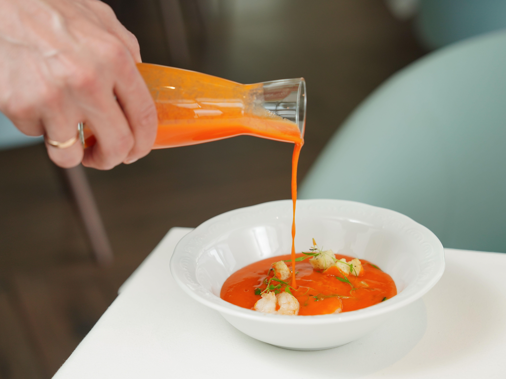
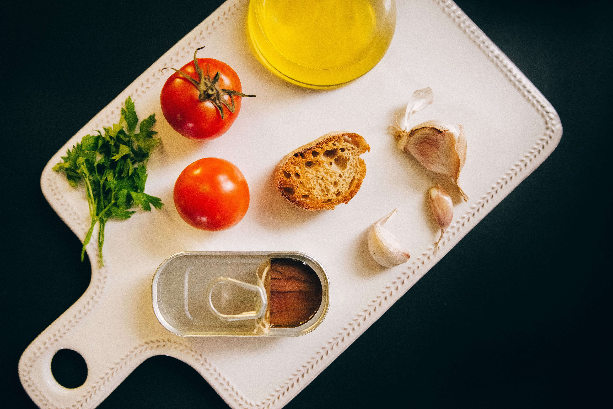
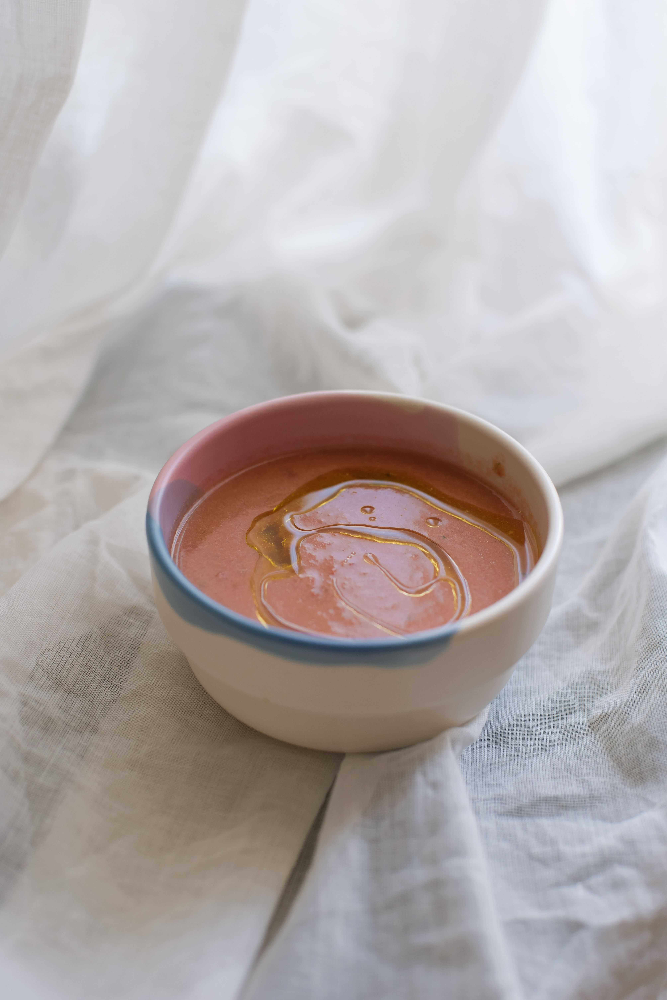
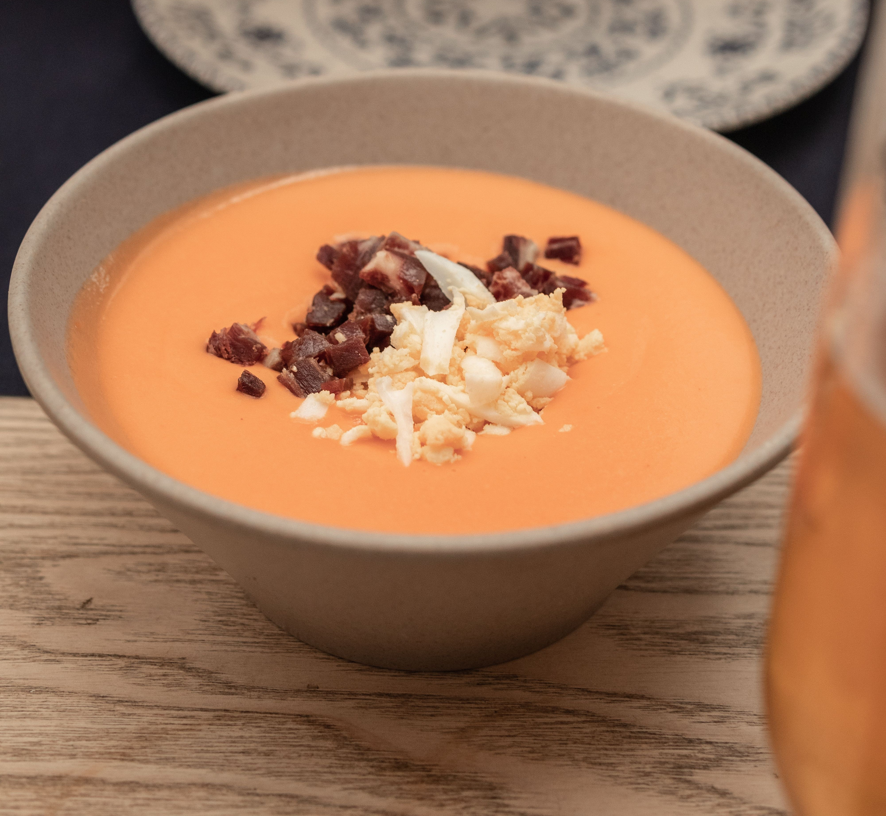

Salmorejo Cordobés: La joya fría de la campiña

El salmorejo cordobés es una crema fría elaborada mediante la trituración de tomates maduros, pan bregado o de telera, aceite de oliva virgen extra, ajo y sal. A diferencia del gazpacho andaluz, no incorpora vinagre ni hortalizas como el pepino o el pimiento, lo que le confiere una densidad y una untuosidad mucho más marcadas, similar a una emulsión o mahonesa vegetal.
Sus orígenes se remontan a las preparaciones de majado de pan con aceite y ajo que los campesinos elaboraban en el dornillo durante las faenas del campo. La incorporación del tomate tras los intercambios con América transformó definitivamente este plato humilde, dotándolo de su característico color rojizo anaranjado y su equilibrio entre acidez y dulzor natural.
Para lograr la textura canónica es fundamental el empleo de pan con poca hidratación y miga compacta, así como una emulsión prolongada al añadir el aceite de oliva a hilo. Se sirve habitualmente con una guarnición de jamón curado cortado en pequeños dados y huevo duro picado, que aportan contraste salino y textura al conjunto.
Ingredientes y fases clave


